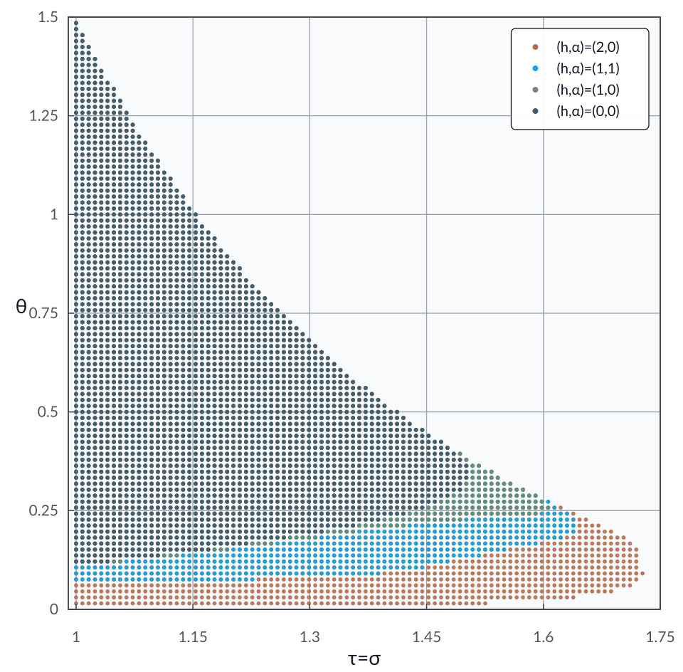

The Chambolle–Pock method: Convex
Problem setup
Suppose \(f_1,f_2:\calH \to \reals\cup\set{\pm\infty}\) are proper, convex, and lower semicontinuous. In the identity-operator case, the Chambolle–Pock method [CP11] solves
by solving the inclusion
with iterations
where \(\tau,\sigma\in\reals_{++}\) are primal and dual step sizes, respectively, and \(\theta\in\reals\) is a relaxation parameter.
For this example, the performance measure is the squared fixed-point residual \(\|\bx^{k+1}-\bx^k\|^2\) with \(\bx^k=(x^k,y^k)\). If it is zero, then \(x^k\) solves the inclusion above.
Model the problem in AutoLyap and certify summability
\(f_1,f_2\) are modeled by
Convex.The problem is represented by
InclusionProblem.The update rule is represented by
ChambollePock.Fixed-point-residual parameters are obtained with
IterationIndependent.SublinearConvergence.get_parameters_fixed_point_residual.Feasibility is checked with
IterationIndependent.search_lyapunovat \(\rho=1\), using the history parameter \(h\) and overlap parameter \(\alpha\).
Run the iteration-independent analysis
This example uses the MOSEK Fusion backend (backend="mosek_fusion").
Install the optional MOSEK dependency first:
pip install "autolyap[mosek]"
from autolyap import IterationIndependent, SolverOptions
from autolyap.algorithms import ChambollePock
from autolyap.problemclass import Convex, InclusionProblem
tau = 1.0
sigma = 1.0
theta = 1.0
h = 1
alpha = 1
problem = InclusionProblem([
Convex(), # f_1
Convex(), # f_2
])
algorithm = ChambollePock(tau=tau, sigma=sigma, theta=theta)
MOSEK_PARAMS = {
"intpntCoTolPfeas": 1e-6,
"intpntCoTolDfeas": 1e-6,
"intpntCoTolRelGap": 1e-6,
"intpntMaxIterations": 10000,
}
solver_options = SolverOptions(
backend="mosek_fusion",
mosek_params=MOSEK_PARAMS,
)
# License-free option:
# solver_options = SolverOptions(backend="cvxpy", cvxpy_solver="CLARABEL")
P, p, T, t = IterationIndependent.SublinearConvergence.get_parameters_fixed_point_residual(
algorithm,
h=h,
alpha=alpha,
)
result = IterationIndependent.search_lyapunov(
problem,
algorithm,
P,
T,
p=p,
t=t,
rho=1.0,
h=h,
alpha=alpha,
solver_options=solver_options,
)
if result["status"] != "feasible":
raise RuntimeError("No feasible Lyapunov certificate for the selected parameters.")
print("Feasible certificate found.")
What to inspect in result:
result["status"]:feasible,infeasible, ornot_solved.result["solve_status"]: raw backend status.result["rho"]: fixed contraction parameter (1.0in this setup).result["certificate"]: Lyapunov certificate matrices/scalars.
In this setup, feasibility certifies that
is summable, and therefore,
Sweeping over multiple values of \(\tau=\sigma\in(1,2)\) and \(\theta\in(0,3/2)\) for several \((h,\alpha)\) settings gives the layered region plot below.
{kind=link}

References
Antonin Chambolle and Thomas Pock. A first-order primal-dual algorithm for convex problems with applications to imaging. Journal of Mathematical Imaging and Vision, 40(1):120–145, 2011. doi:10.1007/s10851-010-0251-1.